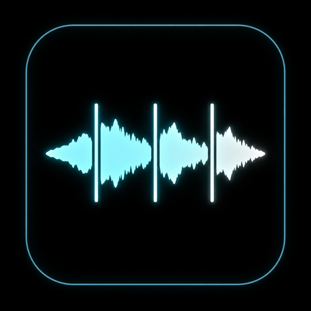

CHOP
Transient or grid
Slice by onset detection with a sensitivity control, or divide cleanly by note value at a set tempo. Markers are drawn right over the waveform, ready to nudge.

Drop in a song or a loop and Slicery chops it into slices, maps them across the keyboard, and lets you play them back — then save the ones you love out to your sample library. The chop-and-play workflow you actually repeat, in one focused instrument.
A paid SHLabs plugin in active development. Follow SHLabs for the release.
Slice by onset detection with a sensitivity control, or divide cleanly by note value at a set tempo. Markers are drawn right over the waveform, ready to nudge.
Every slice maps chromatically from C1 upward, so the chop is instantly playable from your host or a controller — audition a slice with a click, or perform the whole loop by hand.
Gain, pitch (±24), reverse, anti-click fades, gate vs one-shot, and choke groups for hi-hat-style mutual exclusivity — each slice tuned to sit exactly how you want.
Found a one-shot you love? Name it and grab it straight to your sample library. Slicery is as much a sample-prep tool as an instrument.
Turn a slice into a looping launch clip locked to a shared clock — Slicery doubles as a clip launcher for hybrid performance rigs.
Drag-and-drop loading, a clear waveform with slice pads, and a workflow centred on the loop you repeat: chop, play, keep. Think ReCycle × Serato Sample, distilled.